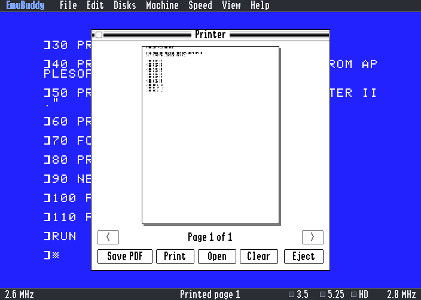

Your IIgs, in a window.
Drop a disk on it and it starts. Share a folder with your computer, print to PDF and go online, all from menus and windows.




- Disks by drag and drop
- A folder shared with the IIgs
- Internet for Marinetti
- ImageWriter II and PostScript
- 1 MHz to full speed
- 54-page User’s Guide
Requires a Mac with Apple silicon, or 64-bit Windows or Linux, and an Apple IIgs ROM file, which is not included.
© 2026 Walter Tengler
Built on KEGS and GSplus
Apple IIgs is a trademark of Apple Inc.
Built on KEGS and GSplus
Apple IIgs is a trademark of Apple Inc.